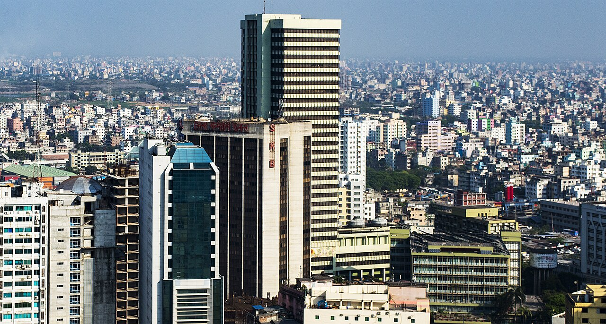
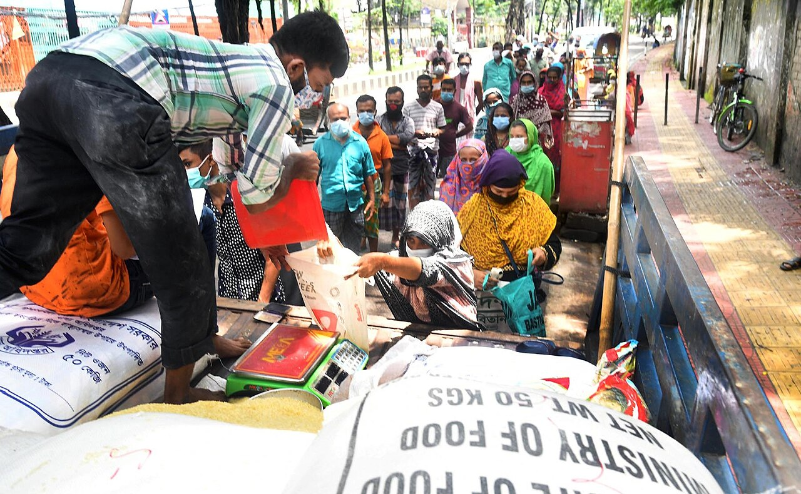

গত মাসে যে চাল কিনেছেন, এ মাসে তার দাম বেড়েছে। ঋণের সুদ এখনো চড়া। পত্রিকায় লেখা, "মূল্যস্ফীতি নিয়ন্ত্রণে কেন্দ্রীয় ব্যাংকের নতুন পদক্ষেপ।" এই তিনটা খবর আসলে একই গল্প। সেই গল্পটা যে দুজন মানুষ বুঝিয়েছেন, এ বছর অর্থনীতির নোবেল তাঁদের।
দুজন মানুষ, একটা প্রশ্ন
১২ অক্টোবর ২০২৬, স্টকহোম। ঘোষণা এল দুটি নামের: স্ট্যানফোর্ডের রবার্ট হল আর কলাম্বিয়ার মাইকেল উডফোর্ড।
স্ট্যানফোর্ড বিশ্ববিদ্যালয়, যুক্তরাষ্ট্র
কলাম্বিয়া বিশ্ববিদ্যালয়, যুক্তরাষ্ট্র
নোবেলজয়ীদের ছবি ও অফিসিয়াল ঘোষণা: nobelprize.org
তাঁদের প্রশ্নটা সোজা: অর্থনীতি কখনো তেতে ওঠে, দাম লাফায়; কখনো ঝিমিয়ে পড়ে, কাজ কমে যায়। এই দুইয়ের মাঝে তাকে ধরে রাখা যায় কীভাবে?
উত্তর খুঁজতে তাঁরা তাকিয়েছেন আমাদের দিকেই: আমরা কী ভেবে খরচ করি, জমাই; দোকানদার কী ভেবে দাম বসান।
রবার্ট হল: মানুষ শুধু আজকের কথা ভাবে না
ধরুন, আপনার বেতন এ মাসে হঠাৎ একটু বেড়ে গেল, কিন্তু আপনি জানেন এটা এক মাসের বোনাস। আপনি কি তাই বলে প্রতি মাসে খরচ দ্বিগুণ করে ফেলবেন? সম্ভবত না। সামনের মাসগুলোর কথা ভেবে হিসাব করেই চলবেন।
হল দেখিয়েছিলেন, মানুষ খরচের সিদ্ধান্ত নেয় ভবিষ্যতের আয়ের কথা ভেবে, শুধু আজকের পকেট দেখে নয়। কথাটা সহজ, কিন্তু এর মানে অনেক। সরকার কিছু করলে মানুষ কেমন সাড়া দেবে, তা জানতে আগে জানতে হয় মানুষ সামনের দিন নিয়ে কী ভাবছে।
মাইকেল উডফোর্ড: মুখের কথাতেই অর্ধেক কাজ
উডফোর্ডের মূল কথাটা চমকে দেওয়ার মতো: কেন্দ্রীয় ব্যাংক কী করে, তার চেয়ে কখনো কখনো বেশি জরুরি হলো সে কী বলে।
ধরুন, দোকানদার জানেন আগামী বছর জিনিসের দাম ১০% বাড়বে। তাহলে তিনি আজই দাম বাড়িয়ে দেবেন। শ্রমিকও বেশি বেতন চাইবেন। দাম বাড়ার ভয়েই দাম বেড়ে যায়। কিন্তু মানুষ যদি বিশ্বাস করে যে কেন্দ্রীয় ব্যাংক দাম সামলে রাখবে, তাহলে কেউ আগেভাগে দাম বাড়ায় না, আর মূল্যস্ফীতিও শান্ত থাকে।
তাই আজ অনেক কেন্দ্রীয় ব্যাংক আগে থেকেই লক্ষ্য ঘোষণা করে। উন্নত দেশগুলোতে সেটা সাধারণত ২%-এর কাছাকাছি; বাংলাদেশ ব্যাংকের এ বছরের লক্ষ্য মূল্যস্ফীতি ৭.৫%-এর মধ্যে রাখা। এই চর্চাকে তাত্ত্বিকভাবে মজবুত করেছে উডফোর্ডের কাজ।
দাম শুধু বাজারে ঠিক হয় না,
ঠিক হয় আমাদের মাথাতেও।
বাংলাদেশের জন্য এর মানে কী

আমাদের দেশে বেশ কিছুদিন ধরে মূল্যস্ফীতি চড়া। সেপ্টেম্বর ২০২৬-এ সরকারি হিসাবে তা ছিল ৮.৩৪%। আইএমএফ বলছে, এ অর্থবছরে গড়ে তা প্রায় ১১% (১০.৯%) হতে পারে। বাংলাদেশ ব্যাংক নীতি সুদহার উঁচুতে (এখন ৯.৫%) ধরে রেখেছে, দাম ঠান্ডা করার আশায়।

তবে আমাদের জন্য উডফোর্ডের কথাটাই বেশি জরুরি: মানুষ যদি ভাবে "দাম তো বাড়তেই থাকবে," তাহলে শুধু সুদ বাড়িয়ে কাজ হয় না। দরকার আস্থা। নীতি স্পষ্ট হতে হবে, ঘন ঘন বদলানো চলবে না, আর যা বলা হয় তা করে দেখাতে হবে।
এক কথায়, এবারের নোবেল মানুষের মন বুঝে নীতি বানানোর স্বীকৃতি।
বাজারে গিয়ে আপনার কি মনে হয়, দাম মাত্র ৮% বেড়েছে? নাকি আরও বেশি? কমেন্টে লিখুন।
পরের পর্বে: ১৯৪৩ সালে বাংলায় খাবার ছিল, তবু লাখো মানুষ না খেয়ে মারা গেল কেন? অমর্ত্য সেনের নোবেলের গল্প।
তথ্যসূত্র
- NobelPrize.org: The Prize in Economic Sciences 2026
- প্রথম আলো: আইএমএফের মূল্যস্ফীতি পূর্বাভাস (অক্টোবর ২০২৬)
- The Daily Star: IMF cuts Bangladesh growth outlook
- Dhaka Tribune: BBS-এর সেপ্টেম্বর ২০২৬ মূল্যস্ফীতি (৮.৩৪%)
- Dhaka Tribune: বাংলাদেশ ব্যাংকের নীতি সুদহার ৯.৫%
- NBER: Hall and Woodford awarded 2026 Nobel Prize